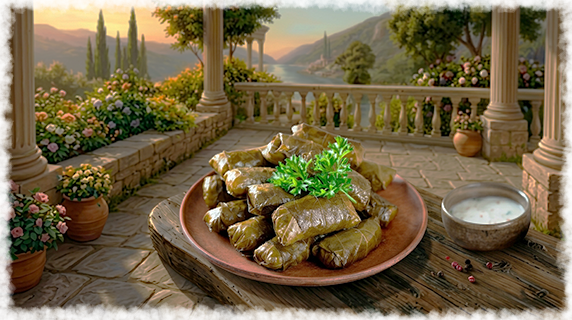
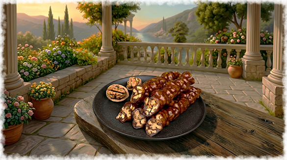

Кухня народа
Армянский хаш - представляет собой суп, который готовится из говядины.
Делают его почти сутки, а едят на завтрак. В хаше нет соли, ее подают отдельно.
Непременно нужно добавить зелень и измельченный чеснок.
Татлах (Фруктовая пастила) - крымский татлах не
содержит сахара или яичного белка. Спелые фрукты
тонким слоем наносились на деревянные доски и высушивались. Их сворачивают в рулоны.


Всем знакома долма,она делается из фарша, обернутого в листья винограда.
В ней есть сушеный базилик, перец, лук, помидоры. Армянская долма укладывается в кастрюлю
плотными рядами, на дно кладут кости или ломтики баклажана, чтобы не пригорела.
Заливается водой или легким бульоном. Подается обязательно со специальным соусом.
Лаваш пользуется огромным спросом. Его пекут в глиняном сосуде (танире).
Булки запекаются на стенках сосуда. В Крыму
выпечка лаваша была сакральным женским ритуалом.
Тесто замешивается на воде, муке и соли, без дрожжей.

Суджух (Шаротс) - Это не мясная колбаса, а сладкий десерт. Грецкие орехи нанизывали на
прочную нить. Виноградный сок местных сортов (Кокур, Сары Пандас) уваривали с мукой до
состояния густой сметаны (дошаб). Орехи многократно окунали в эту массу и сушили на солнце,
часто на морском бризе, который ускорял процесс и придавал особый вкус.
Бастурма: Говяжью вырезку солили, сушили, а затем покрывали толстым слоем пасты чаман
(молотый пажитник, чеснок, паприка, кориандр и соль). В Крыму ее часто вялили в хорошо
проветриваемых подвалах феодосийских домов.
.png)
Гапама (Праздничная тыква) - блюдо осеннего изобилия. Бралась средняя по размеру
сладкая тыква. Срезалась верхушка («крышечка»), вычищались семечки. Внутрь
закладывалась смесь: отварной рис, обильно сдобренный сливочным маслом, сушеные
крымские яблоки и алыча, изюм, крупно рубленные грецкие орехи, мед и корица.
Чечил: Плетеный нитевидный сыр. В Крыму его часто не только солили, но и слегка
коптили на дыму от виноградной лозы, что делало его отличной закуской к местным винам.